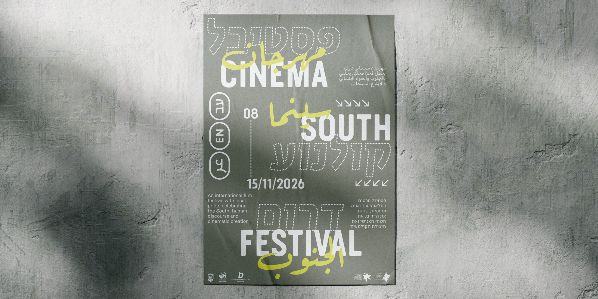
CINEMA SOUTH
FESTIVAL (25th Edition)
Description
Visual Identity, Editorial Design, Motion
2026
Academic · Bezalel
A visual identity for the 25th Cinema South Festival, held in Sderot, Rahat, and the surrounding communities. Rooted in the region’s cultural and linguistic diversity, the identity brings Hebrew, Arabic, and English together in a trilingual typographic system with equal visual prominence.
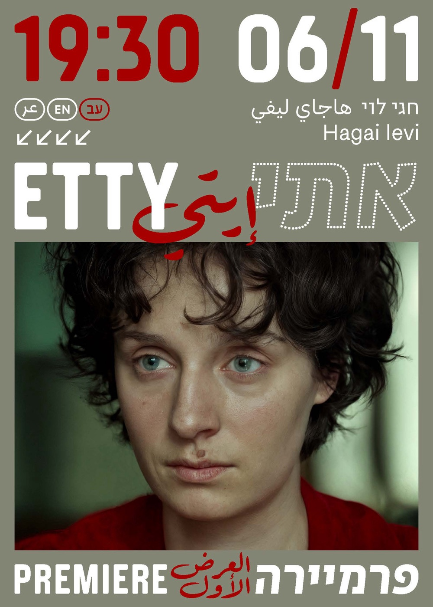
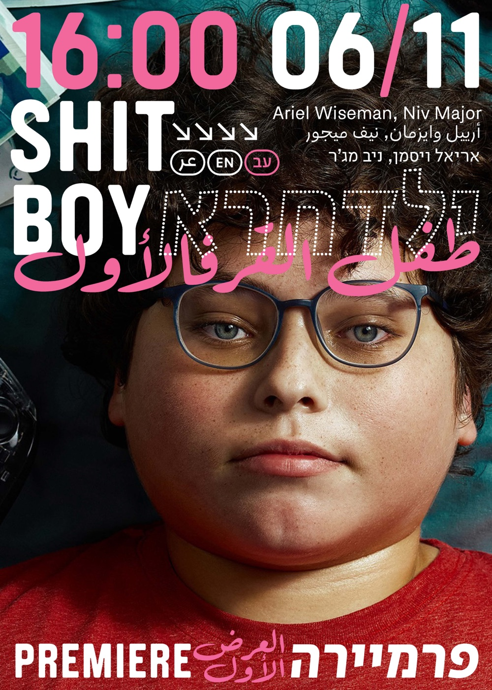
Language is the starting point of the visual identity. Each of the three languages has its own typographic character: English in a brutalist sans-serif, Hebrew in a dotted outline, and Arabic in a calligraphic script. Their contrasting forms, rhythms, and lengths become compositions in their own right.
The color palette draws from the landscape of Sderot and its surroundings: dust, haze, and industrial tones, contrasted with vivid, warm accents that bring energy and celebration to the system.
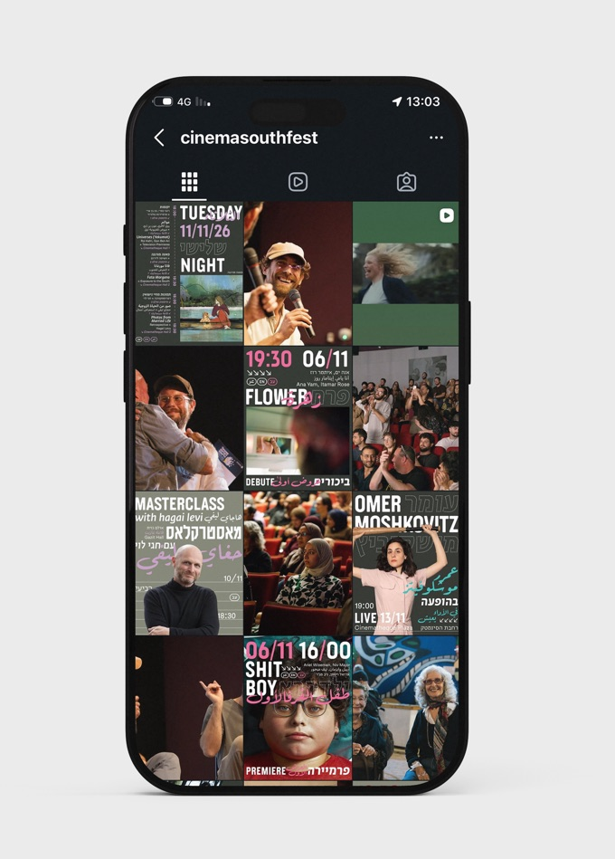
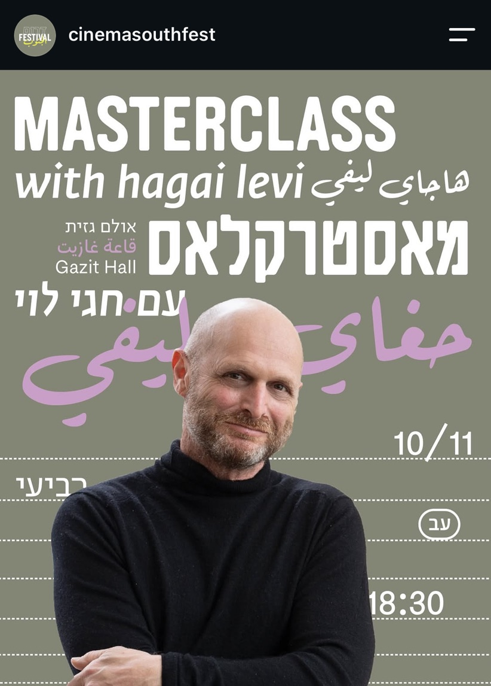
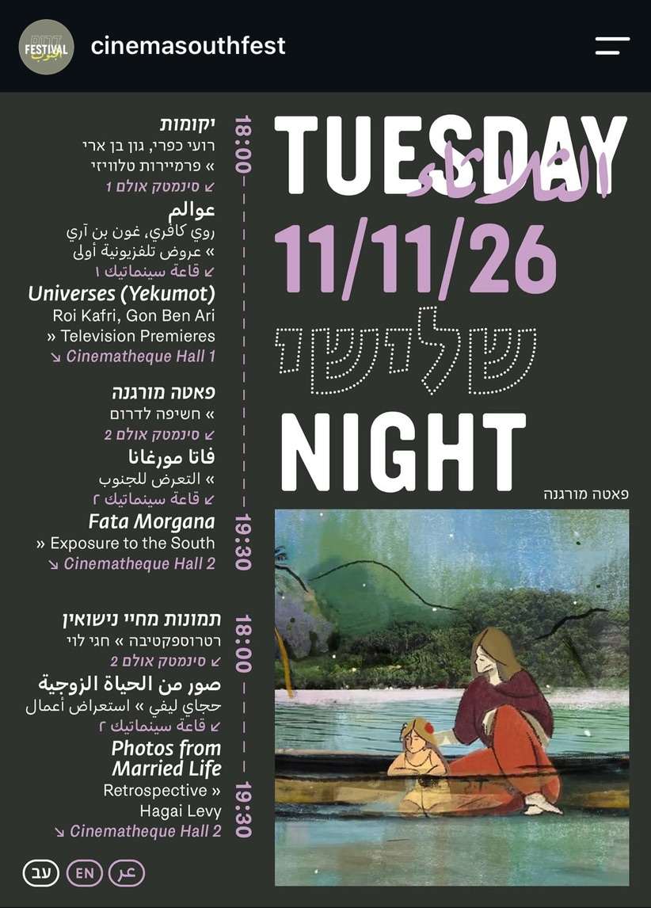
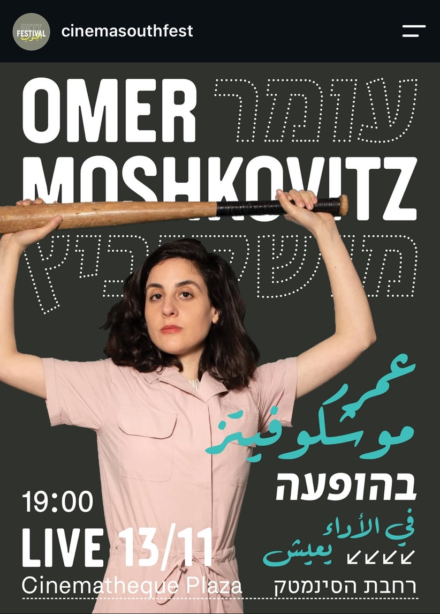
Each language has its own typographic character: an industrial sans-serif for English, an expressive calligraphic script for Arabic, and a dotted outline for Hebrew, adapted from an existing typeface. Their contrasting forms and rhythms create a playful visual language in which all three languages share the same space without losing their individuality.
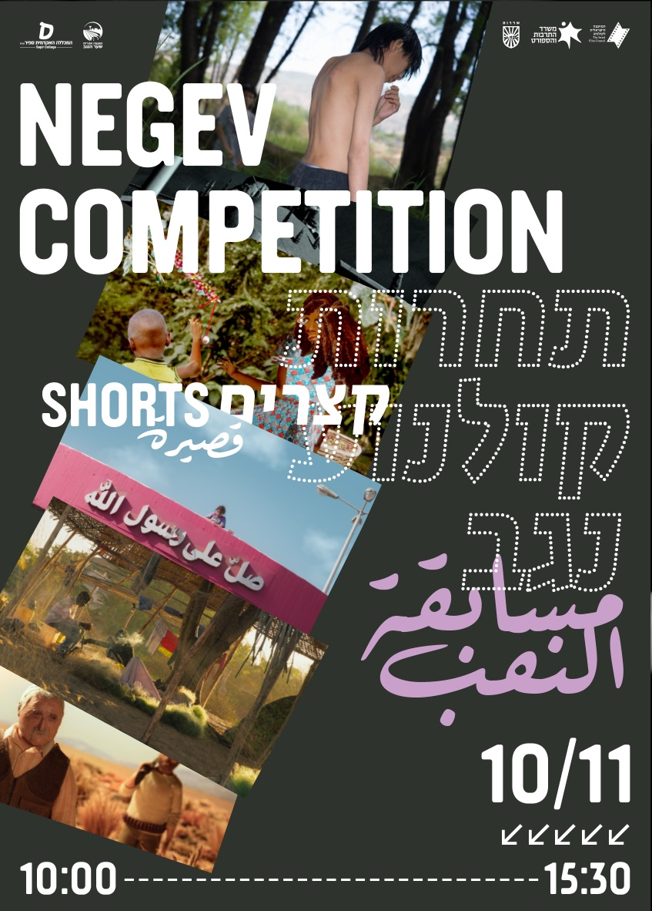
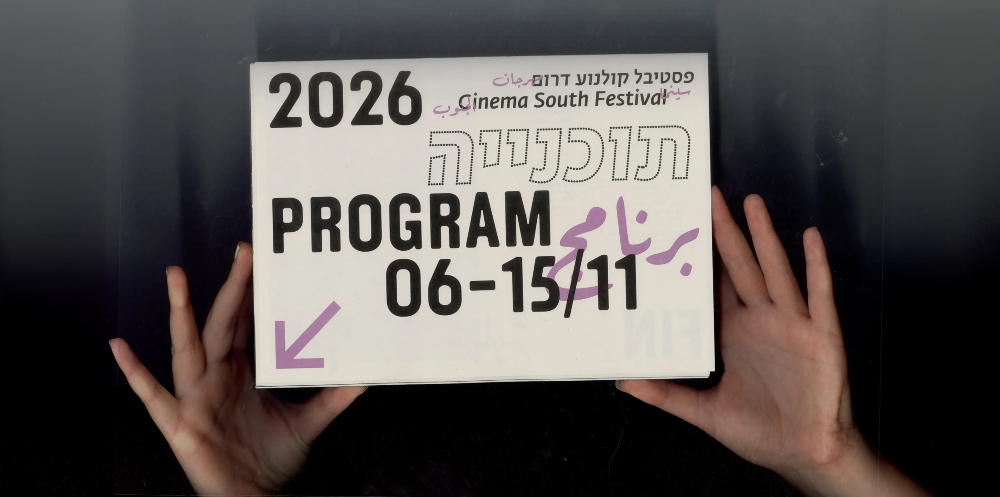
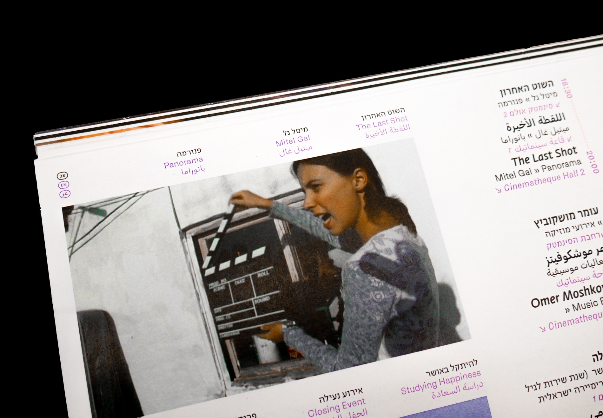
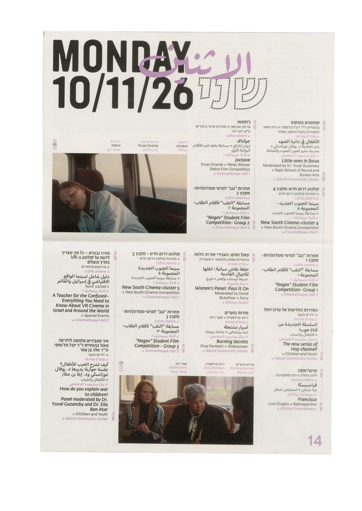
The festival program brings Hebrew, Arabic, and English together within a shared editorial grid, rather than separating them into different sections. Each film’s language is highlighted through color, making the multilingual content easier to navigate while giving all three languages equal visual presence.
Across the printed program, dense schedules alternate with cinematic imagery and more open typographic compositions. The changing layouts create a visual rhythm that unfolds as the pages are turned.
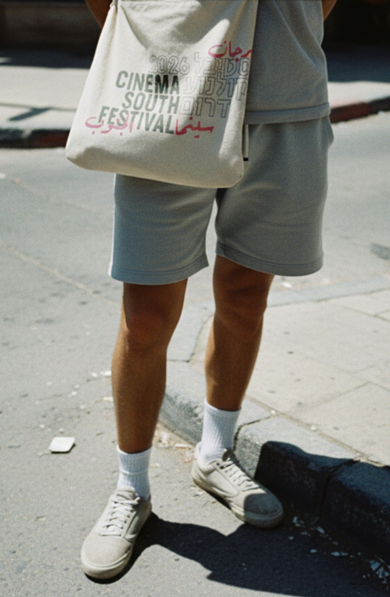
The identity extends into public spaces and everyday objects, carrying its trilingual typographic language across different scales and formats.
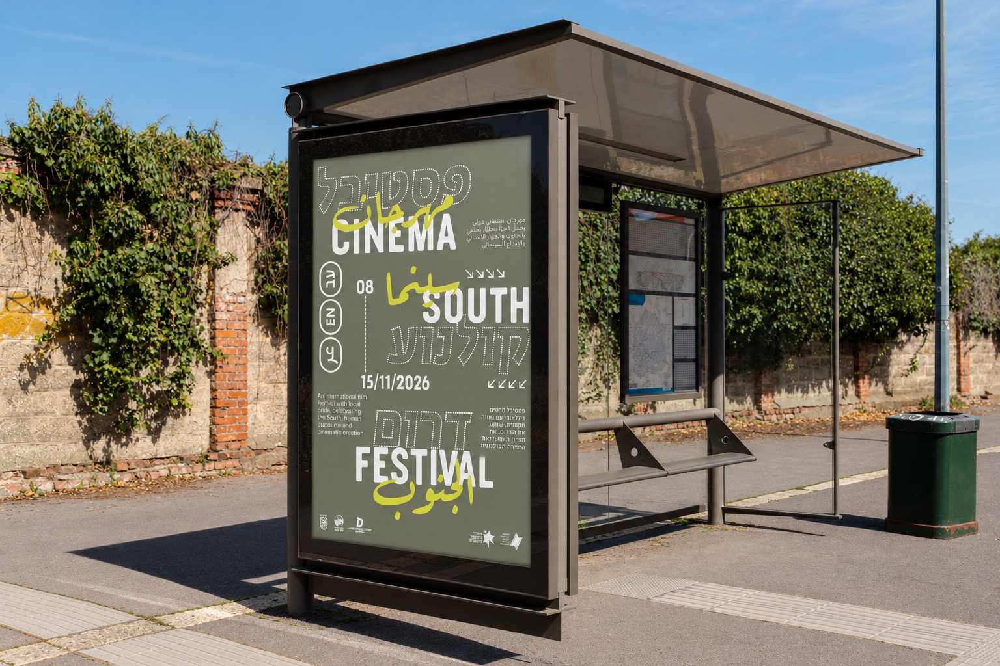
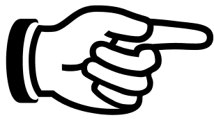